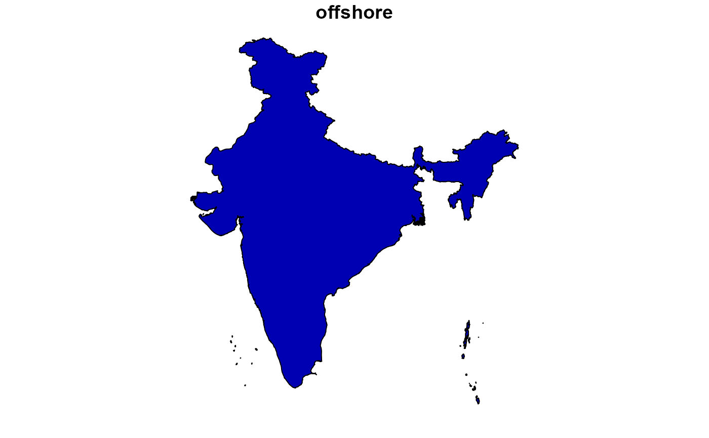
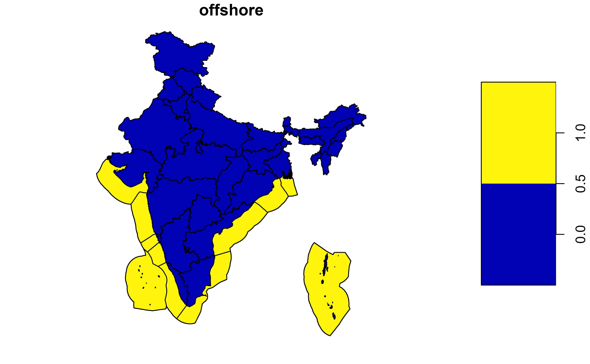

Get IDEEA map with custom number of regions
Usage
get_ideea_map(
nreg = 5,
offshore = FALSE,
islands = TRUE,
aggregate = (nreg != 46),
rename = FALSE,
reg_off = offshore,
merge_islands = TRUE,
...
)Arguments
- nreg
integer, number of regions, one of 1, 5, 7, 32, 34, 36, 37 or 46
- offshore
logical, if TRUE, offshore area with associated regions will be returned
- islands
logical, should "Andaman and Nicobar" ("AN") and "Lakshadweep" ("LD") be included.
- aggregate
logical, if true, geometries will be aggregated by region.
- rename
logical, if TRUE, the
regionandnamewill be returned instead ofreg{nreg}andname{nreg}- reg_off
logical, if TRUE,
reg_offorreg{nreg}_offcolumn will be added with added_offto the names of offshore areas/regions.- merge_islands
logical,
mainlandcolumn should be dropped (if TRUE) or added (FALSE) to the returned sf-object.- ...
Examples
library(sf)
gis_sf <- get_ideea_map(nreg = 1, offshore = F, islands = T)
plot(gis_sf[1], key.width = lcm(4))

gis_sf <- get_ideea_map(nreg = 7, offshore = T, islands = T, reg_off = T)
plot(gis_sf["region"], key.width = lcm(4))
#> Error in x[i]: Can't subset columns that don't exist.
#> ✖ Column `region` doesn't exist.
plot(gis_sf["reg_off"], key.width = lcm(4))
#> Error in x[i]: Can't subset columns that don't exist.
#> ✖ Column `reg_off` doesn't exist.
gis_sf <- get_ideea_map(nreg = 32, offshore = T, islands = T)
plot(gis_sf[1], key.width = lcm(4))
